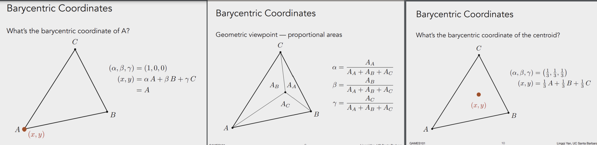

101 notes
101 笔记
Surface Shading (第十章开始)
https://sites.cs.ucsb.edu/~lingqi/teaching/resources/GAMES101_Lecture_07.pdf
Z-buffer:
{kind=link}
- Z-buffer 的思想来源于画家算法，用于处理不透明物体的遮挡问题
- Z-buffer 记录的是像素的深度，更近的会覆盖更远的，不存在排序，所以复杂度是 O(n)，本质只是记录最小（近）值
- Z-buffer 和绘制顺序无关
Shading:
- Blinn-Phong Reflectance Model = Specular highlight（镜面高光）+ Diffuse reflection（漫反射）+ Ambient light（环境光）
- Shading 是模型自身的，是local的，不考虑影子这些不属于自身的！(shading ≠ shadow)
- Lambertian Cosine Law
- Lambertian reflection 模型认为漫反射和视角方向无关
- max(0,n·l) 是为了忽略负数
- I/r^2 能量守恒，辐射半径越远，球的表面积越大，根据面积公式可推理
{kind=link}
{kind=link}
{kind=link}
- Blinn-Phong 模型中的高光计算源于Lambertian的模型。
- 高光使用半程向量计算，是为了简化计算量，是很聪明的方式
- 指数部分用于控制高光的锐利程度，通常取值范围在1-100之间，指数越高，即使较小的角度变化，过渡也越迅速
{kind=link}
{kind=link}
{kind=link}
- Shading 可以发生在 Vertex Shader（顶点着色器）和 Fragment Shader（片段着色器）:

Shading Frequencies：
- Flat Shading 是最简单的，在 Vertex Shader 中完成，模型的面数越多，整体效果越精细
- Gouraud Shading 在 Flat Shading 的基础上增加了顶点插值，需要在 Fragment Shader 中进行插值计算，让过渡更平滑
- Phong Shading 在 Fragment Shader 中完成主要计算，由于是像素级，计算量较大
1. Flat Shading
Flat Shading（平面着色）是一种最简单的着色方法，给每个多边形（通常是三角形）分配一个统一的颜色。
特点：
- 光照计算位置：在每个多边形的一个点（通常是顶点或质心）进行光照计算。
- 插值方式：不进行插值，整个多边形用相同的颜色。
- 效果：
- 每个多边形表现为一个独立的平面，边界明显，具有“低多边形”风格。
- 表面看起来不够光滑，但计算速度快，适用于性能要求高的场景（如低分辨率的实时渲染）。
优缺点：
- 优点：简单，计算量小，适合低细节的模型。
- 缺点：效果生硬，难以表现曲面细节和平滑光照。
2. Gouraud Shading
Gouraud Shading（高洛德着色）是一种改进的着色方法，通过插值光照值来实现更平滑的效果。
特点：
- 光照计算位置：在多边形的顶点处计算光照。
- 插值方式：将顶点计算出的光照值（颜色）线性插值到整个多边形。
- 效果：
- 光滑过渡，避免了 Flat Shading 中的“硬边”效果。
- 表现复杂曲面时有一定的能力，但高光区域可能会丢失细节（例如，可能高光只出现在顶点，而不会平滑扩展到中间区域）。
优缺点：
- 优点：计算量适中，效果平滑，适合大多数实时渲染。
- 缺点：无法很好表现高光等复杂光照细节。
3. Phong Shading
Phong Shading（冯氏着色）是一种更高级的着色方法，通过插值法线向量来计算像素级光照。
特点：
- 光照计算位置：在每个像素（片段）计算光照。
- 插值方式：先对顶点法线进行插值，再用插值后的法线计算每个像素的光照。
- 效果：
- 表面表现极为光滑，可以清晰地表现高光、阴影和其他复杂光照效果。
- 是基于像素的光照计算方法，比 Gouraud Shading 更精确。
优缺点：
- 优点：效果逼真，能精确表现高光、阴影和表面细节。
- 缺点：计算量大，尤其在像素密度高的场景中。
插值、高级纹理映射
阅读材料：第 11 章（Texture Mapping）, 第 11.1、11.2 节
https://sites.cs.ucsb.edu/~lingqi/teaching/resources/GAMES101_Lecture_09.pdf
三角形的重心
- 重心坐标系 不依赖世界坐标，它是针对三角形三个点的相对坐标。
- 重心坐标系本质上是一种权重系统，定义了三角形顶点对任意三角形内部点的"贡献"。
- 三角形的重心，相当于这个坐标系的"0点"，三个顶点的均值位置。 
{kind=link}
- 利用重心坐标系，就可以进行对各种基于顶点的属性，进行顶点插值

纹理映射
- 纹理，认为纹素（texels）是纹理的最小单位， 之间的距离是1；256x256的纹理，就有256x256个纹素.
- 光栅化后，屏幕像素可能会被映射到纹素之间，总之肯定不会恰好对准到某个纹素的位置。
- 为了解决这个问题，需要在纹理和像素之间进行插值，就是纹理映射。
- Nearest: 最近邻插值，取最接近的纹素的颜色，会导致明显的锯齿
- Bilinear: 双线性插值，取最接近的两个纹素的颜色，可以避免锯齿，但是会导致边缘模糊。（做了3次插值）
- Bicubic: 双三次插值，取更多的纹素进行插值，效果更好，但是计算量更大。
{kind=link}
{kind=link}
Texture Magnification
上述是纹理小，屏幕大的情况，连续的像素之间，可以利用纹素进行插值，来实现纹理的放大。 但是如果一个像素，覆盖了多个纹素，比如视角的远处，就会导致颜色错乱(Moire)。
{kind=link}
- 可以通过超采样，来解决这个问题，但是计算量会更大，效果不明显。 - 假如一个像素覆盖了4个纹素，那么就用4个纹素的颜色平均值来代替。对非常远的物体，一个像素可能覆盖全部，比如256个，计算量会特别大。 - Mipmap被设计成预计算后存起来，仅增加⅓的显存占用。每层Mipmap的尺寸都是上一层的一半，直到最后一层，尺寸为1x1。。极限求和是⅓。 - 所以Mipmap是一种查询系统，查询用哪一层Mipping作为当前像素的均值。假如覆盖了2个纹素，这些纹素之间的距离是1，那就是用最外层，原始层，也就是第0层。 - 假如某个像素覆盖了很多纹素，这会在纹理上投影出一个大点P(覆盖了很多个纹素)，那么再取邻近像素的对应的纹素大点Q，（相邻可以是上下左右）获得两个点之间最大距离L，假如L是8,就代表信息量缩小了8倍，用log2(L) 就可以知道它要用第3层Mipmap来查询均值。 - 但还是会有锯齿问题，因为Log2(L) 的结果往往不是整数，这就需要 层与层之间进行插值。 - 这个插值叫做 Trilinear Interpolation(三线性插值) 或者 Trilinear filtering,能达成非常好的抗锯齿效果，但是计算量更大。
{kind=link}
{kind=link}
{kind=link}
{kind=link}
{kind=link}
{kind=link}
{kind=link}
几何 (基本表示方法)
阅读材料：第 12 章（Data Structures for Graphics）
环境光捕捉
- 环境光可以用 镜面球来捕捉，做成Spherical Environment Map
- 但Spherical Environment Map 被处理成为 方形后，上下边缘部分有严重的拉伸。

- 为了解决这个问题，需要用Cubemap来表示，就是在反射球套上一个正方体，这样就不会出现拉伸问题了。
{kind=link}
法向贴图，置换贴图
{kind=link}
{kind=link}
- 还有 用于程序化计算的噪声图，预计算（烘焙）的环境光遮蔽图，3d体积渲染图。
Geometry Representation
- 几何的表示，有显式和隐式的两种方式。
- 显式的表示，比如三角形，直接用三个顶点来表示。比如最常见的 Mesh。
- 隐式的表示，SDF，用一个函数来表示。
- 纹理映射，也是显示的表示，虽然看起来是函数，但值是预先记录在纹理里的，只是映射期间用了计算。（其实我觉得应该叫做半隐式的表示）
{kind=link}
{kind=link}
{kind=link}
- SDF 对某些计算友好，比如混合（插值），还不占用磁盘空间，毕竟只是一个函数。图中对边界进行了插值。

{kind=link}
{kind=link}
Bezier Curves
wavefront OBJ 文件格式
OBJ是Wavefront科技开发的一种几何体图形文件格式。该格式最初是为动画工具Advanced Visualizer开发，现已开放，很多其它三维图形软件中都有使用。
{kind=link}
- v 是顶点，图里是正方体8个顶点
- vt 是纹理坐标，顺序不能乱，后续面里会根据先后序号来引用。
- vn 是法向量，图里是正方体，理论上应该是6个法向量，图里出现了8个是一种数据冗余。
- f 是面，由3点组成，每个点的格式：v1/vt1/vn1，没有纹理可以写成 v1//vn1
- 可知存在纹理时，每个顶点有映射在纹理里的平面坐标。然后通过三角坐标来采样三角形内每个像素的纹理。
- 更多未提及的格式参考 维基百科 Wavefront OBJ
Curves
重点介绍了Bézier Curves，⻉塞尔曲线。最早基于de Casteljau Algorithm。各种贝塞尔曲线都 可以用 ** Bernstein Polynomials(伯恩斯坦多项式) ** 来表示，并推广到多维空间。
我的理解，de Casteljau Algorithm 是一种基于权重插值的算法。控制点代表曲线的权重（力），曲线上的每个点是所有控制点的加权平均。
{kind=link}
{kind=link}
- quadratic Bezier 曲线的插值公式:
- 有点像平方公式展开，令 1-t = x; (x + t)^2 = x^2 + 2xt + t^2
- t取任何值，基函数之和都是1, 所以这其实又回到了重心坐标（本质上是加权平均的一种几何扩展），基函数就是每个控制点的权重。
- 所以，Bezier 曲线上的点都必然落在构成形状的顶点的凸包内。就像重心坐标系下，所有点都在三角形内一个道理。
{kind=link}
- 用Bernstein Polynomials(伯恩斯坦多项式)表示Bezier曲线:
- 基函数都是连续可导，所以Bezier函数 的加权平均也是连续可导的，结果必然是曲线。
- 特殊值，t=0时和1时，分别是起始点和终点。此时求导，方向只和相邻的控制点有关，大小是阶数。
{kind=link}
{kind=link}
{kind=link}
- Spline Curves(样条曲线) 可控制的曲线，没细说。
{kind=link}
{kind=link}